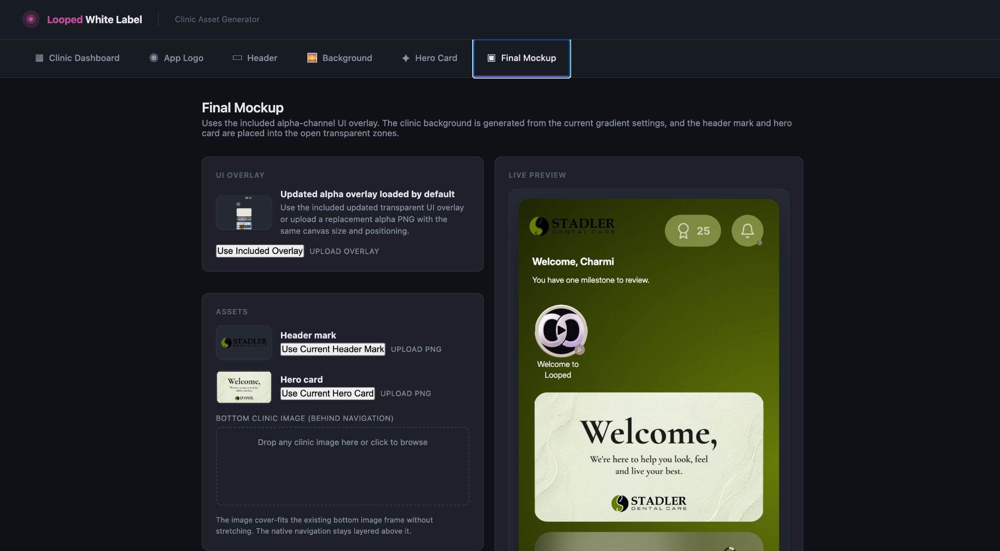

04
White-Label Asset Generator
An operator-facing configuration tool for adjusting clinic branding, assets, overlays, and app-preview behavior while keeping white-label output visually consistent.
Internal tool · white labeling · 2026
Live preview · asset controls · branding system
Live preview · asset controls · branding system
